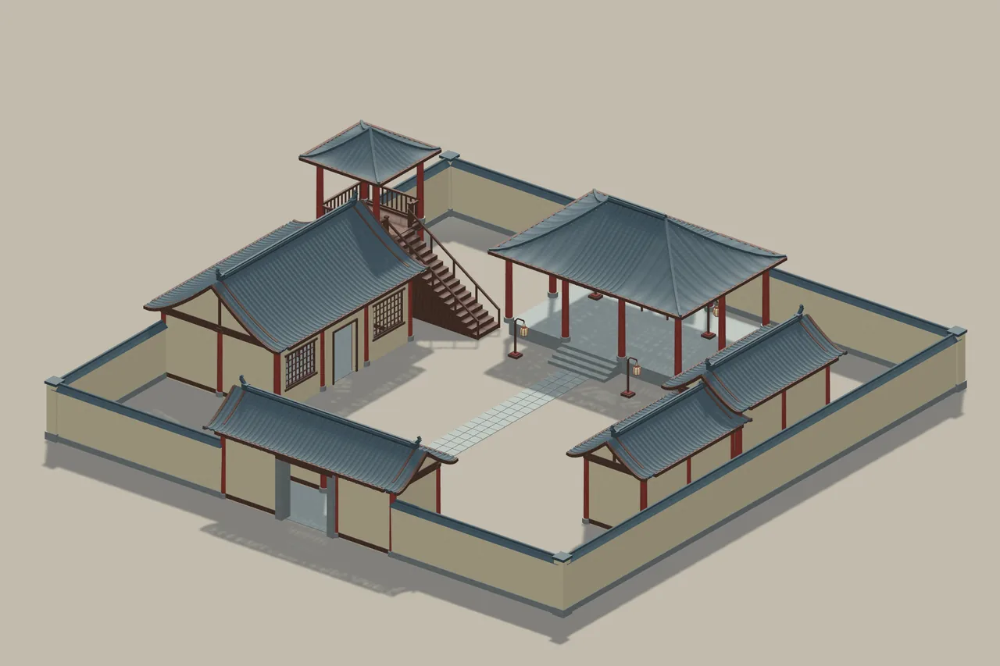
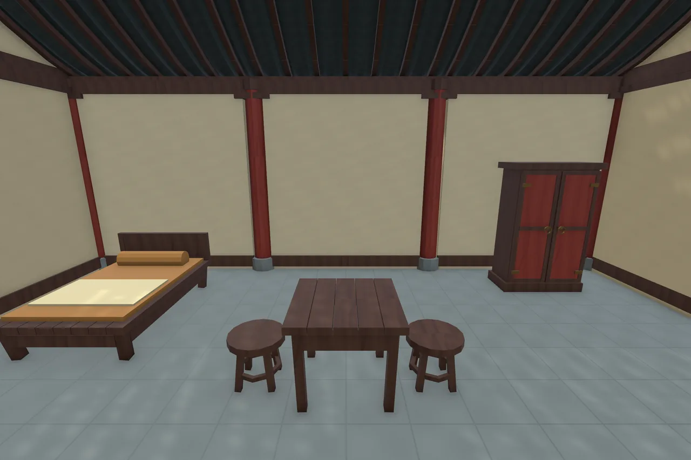

Chang’an Modular Architecture
From a single bay to a courtyard.

From a single bay to a courtyard.
Timber bays, tiled roofs and everyday furnishings form a flexible language for courtyard houses, shops, towers and garden pavilions.
104 distinct modules
14 assembled examples
3 metre bay system
Local technical candidate · Not listed on the Asset StoreA closer look
Select an image to explore



Inside the project
Meter-scale installation pivots and reusable 3 m / 6 m roof families. Includes residence, merchant shop, inn, study, granary, gatehouse, tower and fortified manor examples, with accessible roof and furnishing layers.
Tested configuration
Unity 6000.6.0f1
Universal Render Pipeline 17.6.0
Windows · Direct3D 11 · Linear
Other Unity versions, render pipelines and platforms have not been verified. No target frame rate is promised.
Scope & limitations
No authored LODs, automatic door system, NavMesh or baked lighting. Continuous L/T valley roof joins and xieshan roofs are outside scope. Corridor roof drainage gaps and moon-gate thresholds are intentional.